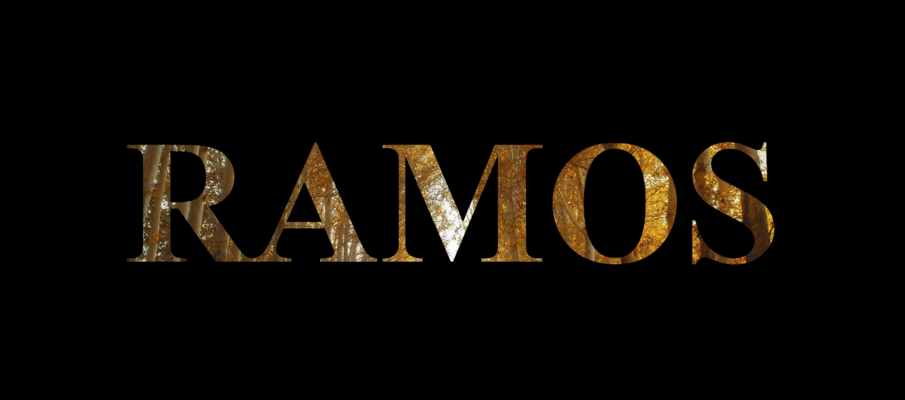

Sobre Mi 
¡Hola! Mi nombre es Angie Clarissa Ramos Brizuela, soy una chica de 17 años de edad, estudio en el Instituto Adventista Bilingue de French Harbour, actualmente estoy cursando mi ultimo año en el Bachiller Tecnico Profesional en Informatica, me gusta mucho este Bachiller, siempre aprendo cosas muy utiles e interesantes, desde pequeña siempre me gusto el arte y actualmente lo sigo haciendo y es algo que me apasiona demasiado, tambien tengo un interes por los instrumentos y la musica, me gusta el deporte, especialmente el baloncesto, y esto es un poco sobre mi.¡Te invito a seguir explorando mi portafolio!
Proyectos
Estos son algunos de los proyectos que he realizado en clase. !Te invito que les heches un vistazo!
Proyecto 1: Lista de Tareas
Una página web sencilla de lista de tareas permite agregar, ver y marcar tareas como completadas. Tiene un campo de texto para ingresar tareas y una lista donde se muestran. Los usuarios pueden marcar las tareas como hechas o eliminarlas fácilmente. Es simple y directa, ideal para organizar tareas básicas.
Proyecto 2: Diseño Tabla de precios
Un diseño de tabla de precios que muestra el producto y el precio tiene filas con el nombre de cada producto y el precio correspondiente. Es simple y directa, permitiendo a los usuarios ver rápidamente qué productos están disponibles y cuánto cuestan. Ideal para presentar opciones de manera clara y ordenada.
Proyecto 3: Menu Slider
Un menú slider es un elemento interactivo en una página web que se desliza desde un costado o la parte superior de la pantalla, mostrando opciones de navegación. Al hacer clic en un icono o botón, el menú se despliega suavemente, revelando enlaces a diferentes secciones del sitio. Es ideal para ahorrar espacio en la pantalla y mantener una interfaz limpia mientras sigue siendo accesible cuando el usuario lo necesita.
Proyecto 4: Diseño Plantilla Basica

Un diseño de plantilla básica es una estructura predefinida para una página web o documento que incluye elementos esenciales como encabezado, cuerpo de texto, y pie de página. Tiene un diseño limpio y organizado, con espacios reservados para texto e imágenes, permitiendo a los usuarios personalizarla fácilmente. Esta plantilla sirve como punto de partida para crear contenido sin preocuparse por el diseño desde cero, ofreciendo una disposición simple y funcional.
Proyecto 5: Trasfondo con Texto

Un trasfondo con texto es un diseño donde el fondo de una página o sección incluye imágenes, colores o patrones, mientras que el texto se superpone sobre este fondo. El diseño equilibra la visibilidad del texto con la estética del fondo, utilizando contrastes adecuados para asegurar que el contenido sea legible. Es una forma creativa de agregar profundidad y estilo a una página, manteniendo el texto claro y accesible.
Habilidades
| Comunicacion: | Siento que tengo la capacidad para expresar ideas claramente y escuchar de manera efectiva a los demas. |
| Empatia: | Siempre hago mi mejor ezfuerzo para poder comprender y compartir los sentimientos de los demas. |
| Trabajo en Equipo: | Personalmente me gusta trabajar sola pero no tengo ningun tipo de problema al colaborar y trabajar bien con otros para alcanzar objetivos comunes. |
| Liderazgo: | Siento que soy capaz de poder guiar, motivar e inspirar a otros hacia el logro, meta u objetivo al que deseamos alcanzar. |
| Adaptabilidad: | Soy capaz de ajustarme y responder positivamente a los cambios y desafios, aunque aveces no me gusten, pero tenemos que aprender a adaptarnos y encontrar soluciones. |
| Gestiones de Tiempo: | Me considero una persona perfeccionista, y algo que he aprendido en estos años de vida a base de experiencias y situaciones, es saber aprovechar el tiempo y saber como organizarse, es muy importante saber como utilizar el tiempo para poder trabajar de una manera eficiente y productiva. |
| Creatividad: | Soy una persona muy creativa, me gusta generar ideas innovadoras y soluciones originales, tambien a la hora de tener que crear algo con materiales fisicos, puedo crear un buen diseño atractivo y totalmente visual para las personas, y algo que me gusta hacer es ponerle un significado a lo que he creado, pero eso depende con lo que este trabajando. |
| Autodisciplina: | Es importante mantener un enfoque y la motivacion para alcanzar nuestras metas a pesar de las distracciones. |
Contacto
Si deseas contactarte conmigo, llena el siguiente formulario!
Mis Redes Sociales